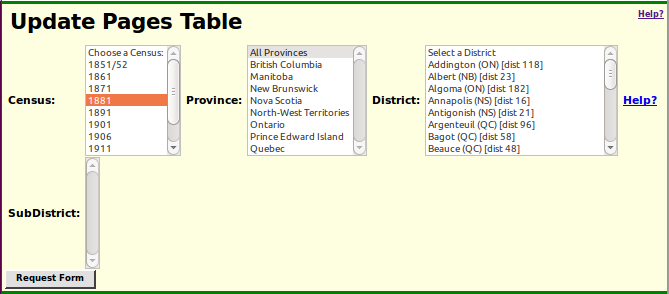

Census Page Table Help
Each census of Canada is divided into enumeration divisions.
The enumeration division is the lowest administrative level of the
census and is assigned to an individual enumerator to complete.
Each division includes one or more pages. The Census Page table
contains the information maintained for each individual page of
each census.
Each Page entry includes:
- The 6 character identifier of the census. Normally this consists of the
2 character country code, 'CA' for Canada,
and the 4 digit enumeration year. However for the
pre-confederation censuses, which were administered separately in
each of the colonies, the country code is replaced by a
two character abbreviation for the colony, for example 'CW' for
Canada West (previously called Upper Canada, and subsequently Ontario).
- The numeric identifier of the district. This is almost always
a sequential integer, however in a couple of cases the district
number includes a fractional component (½ expressed as .5).
- The numeric or alphabetic identification code for the Sub-District,
usually a township, town, large village, or city ward.
- The division number of the Sub-District is divided into enumeration
divisions to split the enumerators' workload.
- The numeric page number.
- The number of individuals enumerated on the original page.
Initially this defaults to the number of lines on the form, but it
is adjusted when the page is transcribed.
- The URL of the associated image if it is available on the web.
- The user identifier of the transcriber.
- The user identifier of the proof-reader.

The application requires that you uniquely
identify the census,
the province, the district number, the sub-district identifier,
and if necessary the division number.
Once you have made that selection the
application displays the portion of the Division Page table including
all of the pages in the selected division.
Once you have made your selection, click on the
Request Form button.
The application displays the information on all of the pages
in the requested division in a
tabular form
that can be updated like a spreadsheet.